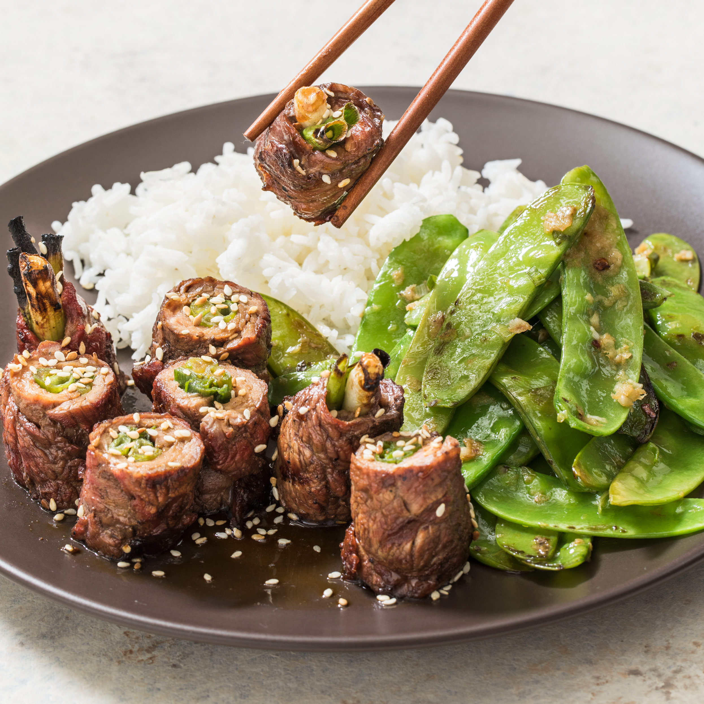

Japanese Beef Rolls
back to home

Japanese beef rolls
This is a simple dish which adds an Asian flair to the dinner table with ease. Some preparation is required but
it can be put together in advance and cooked only minutes before you're ready to eat.
A healthy and filling meal, it can be served with rice, or for the carb-conscious, by itself.
Ingredients
- 1 tablespoon vegetable oil
- 12 shiitake mushrooms, sliced
- 24 spears fresh asparagus, trimmed
- 8 thin-cut top round steaks
- ¼ cup soy sauce
- 1 bunch green onions, green parts only
Steps
- Heat the oil in a skillet over medium heat. Add the mushrooms, cover and allow them to sweat over low heat
until soft. Do not let them brown. Meanwhile, bring a large pot or skillet of water to a boil. Blanch
asparagus by lowering it in a strainer into boiling water; cook just until bright green, about 30 seconds,
and then transfer asparagus into ice water to stop the cooking. Set aside.
- Set oven rack about 6 inches from the heat source and preheat the oven's broiler. Grease a broiling pan.
- To construct the rolls, lay the steaks out flat. If your steaks are thick, pound them to about 1/4 inch thickness. Brush soy sauce onto the surface, then place a few mushrooms, a couple of green onions and 3 asparagus spears at one end of each steak. Roll up towards the other end to enclose, and secure each bundle with a toothpick. Place the rolls seam side down on the broiling pan.
- Roast under the preheated broiler until browned on top, about 3 minutes. Turn the rolls over and brown on the other side, 2 to 3 more minutes. Be careful not to overcook; this could burn the steaks or make the meat tough.
back to home